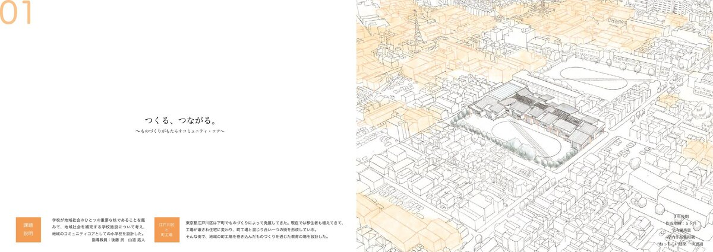
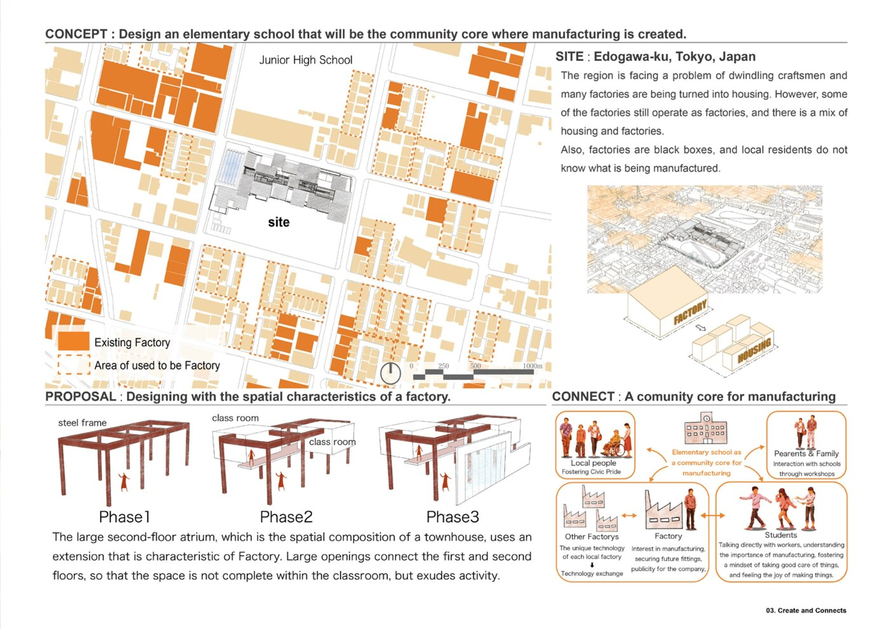
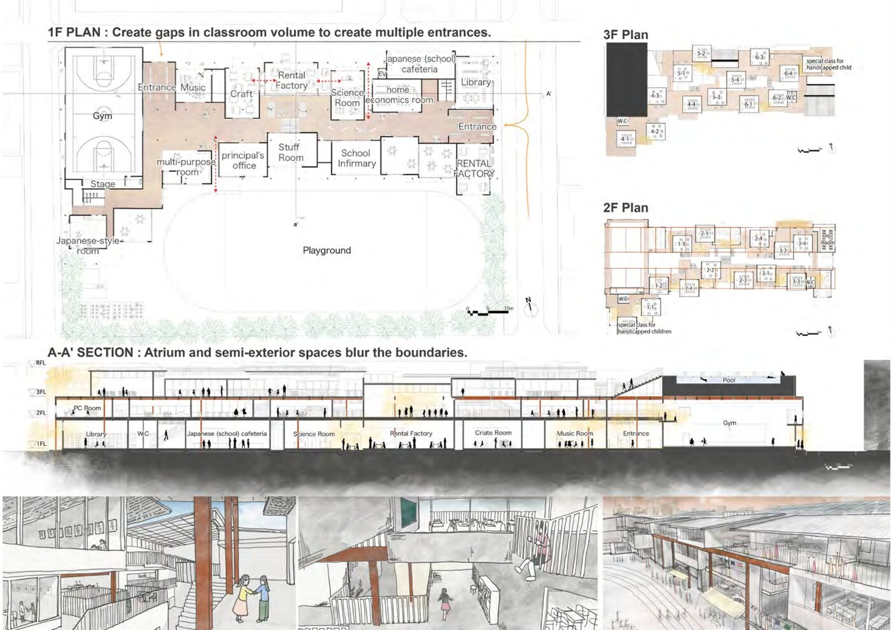
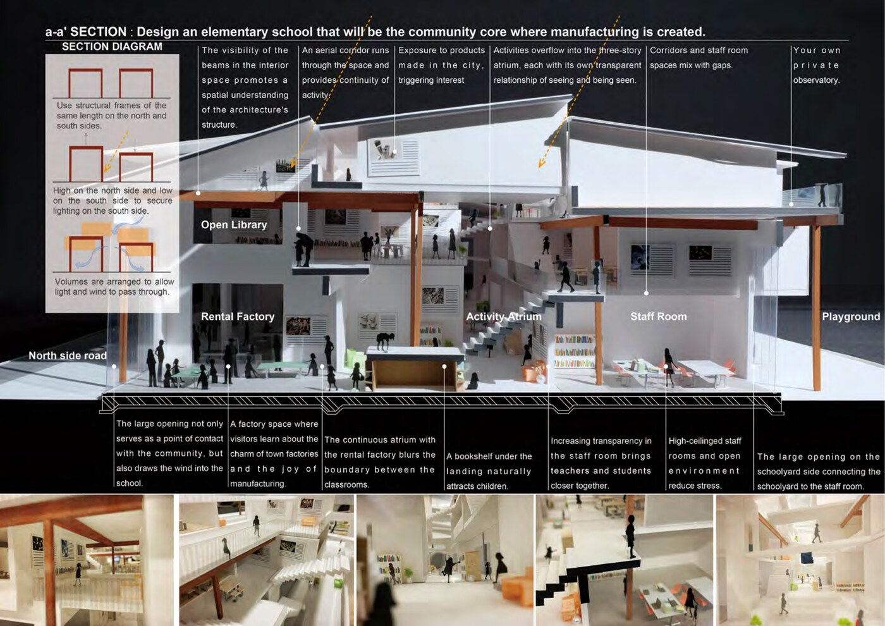

This assignment is to design an elementary school as the community core of the city, using the elementary school where you graduated as the target site. Edogawa-ku in Tokyo has developed around a culture of small-scale manufacturing — machikoba (town factories) producing goods and sustaining local livelihoods. Today, these factories are disappearing as land is redeveloped for housing.
自分が卒業した小学校を対象敷地として、都市のコミュニティコアとしての小学校を設計する課題。東京都江戸川区は町工場のものづくり文化を基盤として発展してきたが、後継者不足や土地転用により町工場は減少しつつある。
The school integrates a rental factory space open to both students and local craftspeople at the heart of the building. The structural frame follows the scale of a machikoba bay — using the same length frames on the north and south sides, with north elevated and south lowered to secure natural light on the south side. Volumes are arranged to allow light and wind to pass through.
建物の中心に、児童と町工場の職人が共に使う貸工場スペースを統合する。構造フレームは町工場のスパンに倣い、南北同じ長さのフレームを用いる。北側を高く・南側を低くすることで南面の採光を確保。ボリュームは光と風が通り抜けるように配置する。
The a-a' section reveals how the school becomes a community core where manufacturing is created. The rental factory space — where visitors learn about the charm of town factories and the joy of manufacturing — blurs the boundary between factory and classroom through a continuous atrium. An open library runs through the space, and a bookshelf under the landing naturally attracts children. The large opening on the schoolyard side connects school and staff room.
a-a'断面はものづくりが生まれるコミュニティコアとしての学校を示す。職人のものづくりの魅力と喜びを学べる貸工場は、連続する吹き抜けを通じて教室との境界を曖昧にする。オープンライブラリーが空間を貫き、踊り場下の本棚が自然と子どもたちを引き寄せる。校庭側の大開口が校舎と職員室を繋ぐ。

Site analysis — Edogawa-ku Matsue, machikoba distribution and concept diagrams敷地分析 — 江戸川区松江の町工場分布とコンセプトダイアグラム

Floor plans — 1F / 2F / 3F平面図 — 1階 / 2階 / 3階

a-a' Section and interior perspectivesa-a'断面図と内観パース